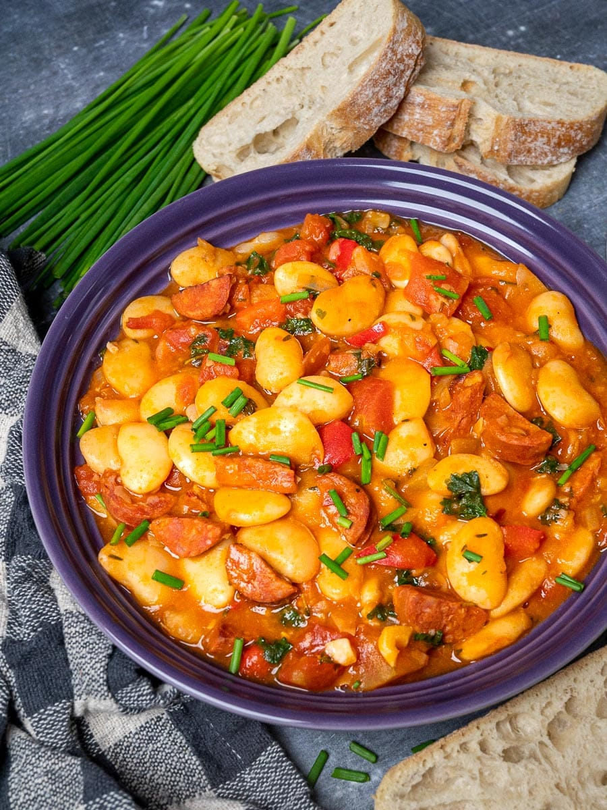

Butterbean Stew

Chorizo Butterbean stew
Ingredients
- 500ml Chicken stock
- 450g Diced chicken thighs
- 200g chorizo
- 2 tbsp Smoked paprika
- 1/2 tbsp Cummin
- Salt to taste
- Black pepper to taste
- Handful chopped Parsley
- 1 tsp Cayenne
- 3 tbsp Olive oil
- 5 cloves minced garlic
- 1 Large diced onion
- 1 large diced bell pepper
Steps
- Render oil from chorizo in pan, then move chorzio to a bowl, leaving the oil
- Brown chicken thighs in same pan then remove to same bowl as chorizo
- Fry onions until soft and translucent
- Add peppers,garlic and spices. Cook until fragrant
- Mix chicken and chorizo back into pan
- Pour in stock and add parsley
- Add butter beans to stew
- Simmer until slightly thickened
- Serve in your favourite bowl with crusty bread if thats your vibe
Home